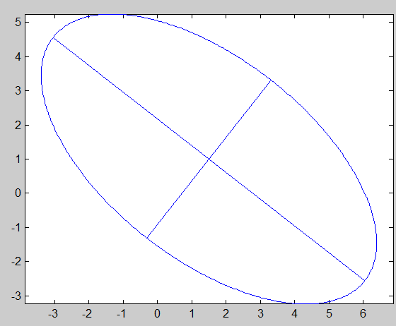

| Forward Search Data Analysis Toolbox™ |
|
| Provide feedback on FSDA toolbox |
Plots an ellipse starting from centroid and covariance matrix
ellipse(mu,Sigma)
ellipse(mu,Sigma,conflev)
ellipse(mu,Sigma) plots the ellipse using default confidence level
ellipse(mu,Sigma,conflev) plots the ellipse using user defined confidence level
Draw an ellipse centered in with negative orientation as specified by cov matrix A
rho=-2; A=[4 rho; rho 3 ]; mu=[1.5 1]; ellipse(mu,A);

| Provide feedback on FSDA toolbox |
|
|
dsxy2figxy.html | fanplot.html |
|